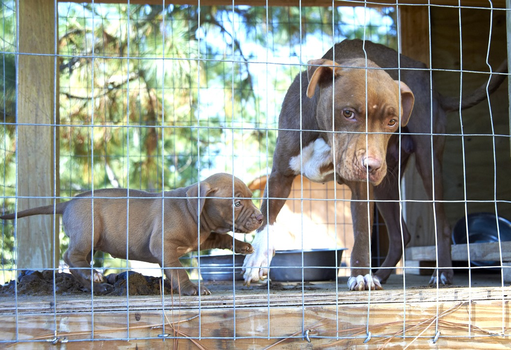

ASPCA
Welcome to ASPCA website
They are waiting for you!


Donate Now to Receive Your ASPCA Wrapping Paper
This November, we’re giving thanks for you! To show our gratitude for your support, we will send our limited-edition wrapping paper to those who donate $25 or more. Act fast to receive your paper in time for the holidays!
In Massachusetts, Election Voters Also Elevated Animal Welfare
In voting “Yes” on Question 3, Massachusetts voters declared that cruel farm animal confinement is barbaric and at odds with contemporary values. Read more about this victory in a blog post by ASPCA President CEO Matt Bershadker.
ASPCA on the West Coast: Saving Hope
The ASPCA’s West Coast team continues to make a resounding difference for the most at-risk pets in the city of Los Angeles. Through Relocation, Spay/Neuter, and Safety Net initiatives, we are not only helping save lives
Animal Rescue
No matter the location or scale of the deployment, the ASPCA is prepared to take on animal cruelty cases when needed—from initial investigations to the final placement of rescued animals in homes.
The Criminal, Underground World of Dog Fighting
Dog fighting is one of the most heinous forms of animal cruelty. Fighting dogs are typically raised in isolation, so they spend most of their lives on short, heavy chains.
My life
My life is really interesting, when I was 5 years old, I just learned dance, tennis and I have benn to the dancing show before, but as the time past, I feel like I want to draw what I think about, and I really admired the person who can draw very well, I feel peaceful when I am drawing.